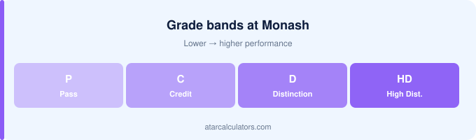

To calculate your Monash GPA, map each grade to its point (HD=7, D=6, C=5, P=4, N=0), multiply by the unit’s credit points, add those up, and divide by total credit points attempted. Monash also reports an official 7.0 GPA, so your calculation is a useful check on that figure.
Key takeaways
- Map each grade to a point: HD=7, D=6, C=5, P=4, N=0.
- Multiply each unit’s grade point by its credit points.
- Add those products, then divide by total credit points.
- Larger units affect your GPA more than smaller ones.
- Fails usually count as 0 but still add to the total.
- Monash also reports an official 7.0 GPA, so you can check your estimate.

The point values
At Monash, each grade maps to a point on the 7-point scale: High Distinction 7, Distinction 6, Credit 5, Pass 4 and Fail 0. These points are what you average to get your GPA.
Because Monash reports an official 7.0 GPA, your calculated figure should match Monash’s if you use the same grades and credit points.
The formula
The Monash GPA formula is the standard weighted average: multiply each unit’s grade point by its credit points, add those, and divide by total credit points. What differs at Monash is where the grade boundaries sit.
Why credit points matter
Credit points matter because Monash weights by them. A 12-point unit moves your GPA three times as much as a 4-point one, which is why a poor result in a large unit hurts disproportionately.
Step by step
Map each Monash grade to its point, weight by credit points, sum, divide. The step students get wrong is the mapping — Monash’s Distinction band starts lower than at most universities.
A worked example
Work the example with Monash’s own bands. A mark of 72 is a Distinction at Monash and would be a Credit at UNSW — same mark, different point, different GPA.
Handling fails and non-graded units
A fail counts as 0 at Monash and still carries its credit points into the denominator. One failed 12-point unit does real damage to a Monash GPA.
Treat the result as a useful check
Treat any Monash GPA as an estimate. Monash publishes its own official calculation, and faculty rules can vary — this tool shows you the shape, not the certificate.
Converting for other systems
Converting a Monash GPA for overseas use is imprecise, and doubly so because Monash’s band boundaries differ from the sector norm. Our guide to Australian versus US GPA explains the gap. Always state the scale you used.
Use a calculator
The simplest way to avoid arithmetic errors is to use our Monash GPA calculator, which applies the point values and credit weighting for you. Enter your graded units and it does the rest.
That lets you focus on which units to include, and on testing how a future grade would change your GPA.
Which units count
Which units count toward your Monash GPA depends on your course rules. Check whether cross-institutional and elective units are included before you rely on a number.
Common mistakes to avoid
The commonest Monash GPA mistake is using another university’s bands. A 72 is a Distinction here and a Credit elsewhere — that single difference shifts the whole average. See our list of common GPA calculation mistakes.
The power of grade boundaries
Monash grade boundaries sit lower than at many universities: a Distinction is a mark of 70 to 79. Do not assume the sector-standard 75 threshold applies here.
Projecting your future average
To project your Monash GPA, add the credit points you still have to take and model the grades. Monash’s lower Distinction band means the arithmetic is more forgiving than you may assume.
Track it each semester
Track your Monash GPA each semester rather than at the end. Weighted averages move slowly once you have accumulated credit points.
A quick recap
In short: Monash uses the 7-point scale, weights by credit points, and sets its Distinction band at 70 to 79 — lower than the sector norm.
Common questions
How do I calculate my GPA at Monash?
Assign each grade its point value (HD=7, D=6, C=5, P=4, N=0), multiply by the unit’s credit points, add those up, and divide by your total credit points attempted.
What is the GPA formula at Monash?
GPA equals the sum of each unit’s grade point multiplied by its credit points, divided by your total credit points. The credit-point weighting means larger units affect your GPA more.
How do credit points change my Monash GPA?
GPA is weighted by credit points, so larger units affect it more than smaller ones. A strong grade in a high-credit unit lifts your GPA more than the same grade in a low-credit one.
How do I convert my Monash marks to a GPA?
Convert from your grades, not your marks. Map each grade to its point on the 7-point scale, multiply by credit points, and take the credit-weighted average.